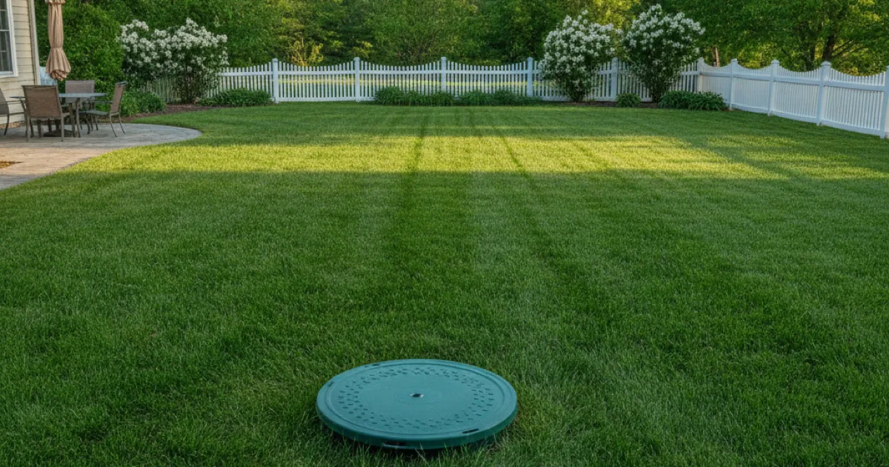
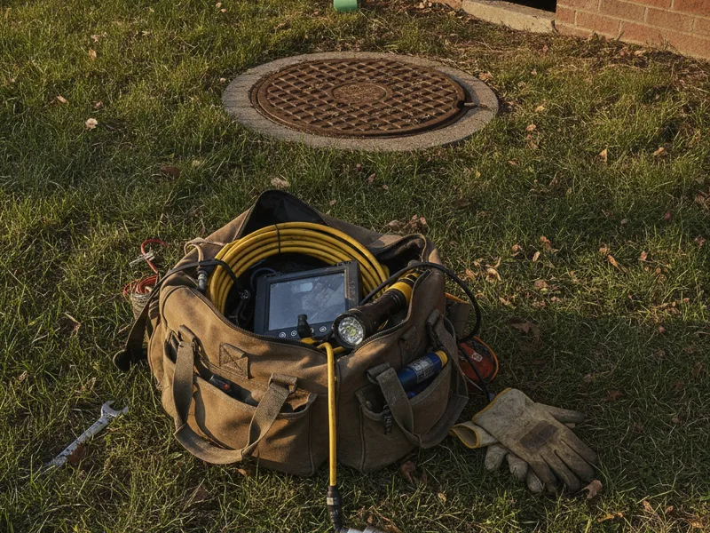

Septic Services in Armonk, NY
We're a licensed plumber, not a septic pumping company — but when a septic-connected home has slow drains, backups, or fixture problems, we handle the plumbing side of it with clear, upfront communication.
- Licensed & Insured
- Upfront Pricing
- Locally Owned & Operated
- Same-Day Service Available

What we cover
If your home relies on a septic system instead of municipal sewer, plenty of ordinary plumbing problems can trace back to how your septic system and household plumbing interact — slow drains throughout the house, gurgling pipes, a toilet that won't flush right, or sewage odors indoors.
We handle the plumbing side of these problems: diagnosing what's happening in your household pipes and fixtures, clearing blockages that affect drainage into the septic system, and repairing the plumbing connections between your home and the tank. For the specifics of that work, see septic tank plumbing support.

What we don't cover
To be upfront: Pete's Plumbing is a licensed plumber, not a dedicated septic pumping, installation, or inspection company. We don't pump or empty septic tanks, install new septic systems, or provide septic certification for a home sale.
If your issue turns out to be a tank that genuinely needs pumping, or you need a septic system inspected and certified, we'll tell you that plainly and point you toward the right kind of company for that specific job — rather than taking on work outside what we're equipped and licensed to do.
Septic systems around Armonk
A good number of properties across the more wooded, less densely developed parts of our service area — larger lots around Bedford, parts of Mount Kisco, and outlying stretches of Armonk itself — rely on septic systems rather than municipal sewer. That's different from the plumbing considerations in more built-up areas, and it shapes how we approach a drainage complaint.
Even in a septic-connected home, keeping drains flowing in septic-connected homes matters just as much as in any other property — the difference is understanding how what goes down your drains affects the tank and leach field over time. The EPA publishes a septic system homeowner guide with good general maintenance basics if you want the fuller picture.
Our process
We start by asking what you're noticing — which fixtures are affected, whether it's one drain or the whole house, and any odors or sounds. That tells us whether this looks like a plumbing-side problem or something that points toward the tank itself needing attention from a septic company.
If it's plumbing-side, we diagnose and repair it, with upfront pricing before we start. If it looks like a tank issue, we'll say so directly and help you understand what a septic company visit would likely involve.
Who to call
Call us first if you're dealing with slow drains, gurgling pipes, or a fixture that's not draining right in a septic-connected home — we'll diagnose the plumbing side and tell you honestly if it looks like a tank problem instead.
For a full rundown of the rest of what we do, see our wider list of plumbing services.
Frequently asked questions
Do you pump septic tanks?
No. We're a licensed plumber, not a septic pumping company. We handle the plumbing side of septic-connected homes and will point you to the right company if your tank needs pumping.
How do I know if my problem is plumbing or the septic tank itself?
Slow drains in a single fixture usually point to a plumbing issue. Slow drains throughout the whole house, combined with odors or a soggy area near the tank or leach field, often point to the tank itself needing service.
Can you inspect or certify my septic system for a home sale?
No, septic certification and inspection is outside what we do. We can help with plumbing-related concerns, but a sale inspection needs a company licensed specifically for that.
Do you install new septic systems?
No, we don't install septic systems. We handle the household plumbing connected to an existing system.
What should I avoid putting down drains in a septic-connected home?
Grease, wipes (even ones labeled flushable), and harsh chemical drain cleaners can all cause problems for a septic system over time. If you're not sure about something specific, ask us.
Do you serve septic-connected homes outside Armonk?
Yes, we serve septic-connected properties across Armonk, Pleasantville, Mount Kisco, Yonkers, Bedford, Scarsdale, and Greenwich.